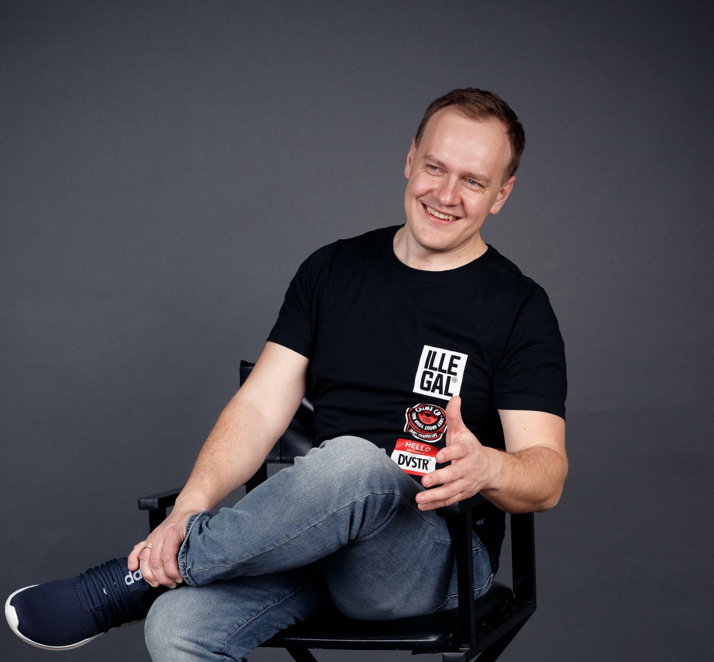

About
Anton Kurakin | IT Leader
Head of Software Development / CTO with 23+ years in IT: architecture, highload, logistics, telecom, fintech, enterprise, and engineering team leadership.

Profile
Business, IT, and meaningful projects
Scale
In numbers
Profile
Career path
Domains
Where the experience applies
Products and systems for logistics, telecom, fintech, enterprise, and the public sector.
Stack
Technical background
Development, architecture, databases, messaging, engineering processes, and management tools.
Validation
Education, certificates, and software registrations
Technical and management education, professional certifications, and registered software products.